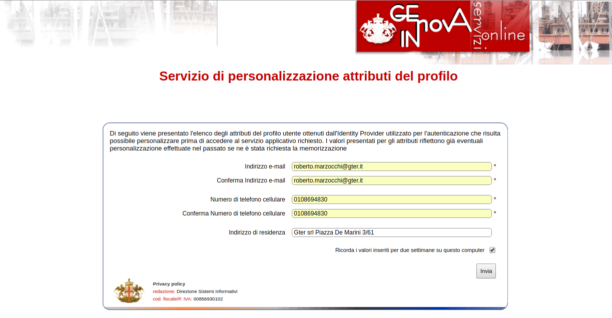
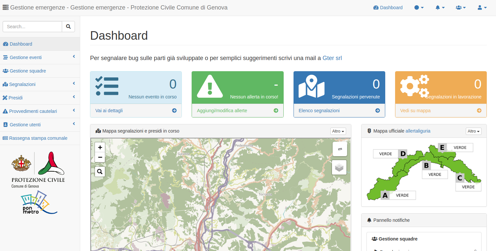

Modalità di accesso¶
Chi può avere accesso al sistema¶
Le modalità di accesso attualmente previste dal sistema sono:
- dipendente comunale: avviene inserendo matricola e password comunali
- esterno: avviene inserendo le proprie credenziali SPID
Le matricola e/o le credenziali SPID sono il criterio con cui accedere all’appllicativo. Dopodichè per visualizzare le informazioni e/o inserire nuove informazioni è necessario essere abilitati dall’amministratore di sistema della protezione civile.
L’amministratore di sistema ha la possibilità di associare un dipendente comunale o un utente esterno a un determinato profilo utente all’interno del Sistema e questo determina cosa l’utente può fare o meno sull’applicativo stesso.
Come accedere al sistema¶
L’applicativo realizzato è web-based per cui si accede al sistema semplicemente tramite un link
In particolare, esistono due versioni dell’applicativo:
- ** versione in esercizio** https://emergenze.comune.genova.it accessibile via internet
- ** versione di test** https://gestemert.comune.genova.it accessibile solo da rete comunale
L’accesso avviene tramite un applicativo dei Sistemi Informativi del Comune di Genova denominato SIRAC SSO (Single Sign On authentication) e appositamente implementato per l’accesso agli applicativi che richiedano una doppia modalità di autenticazione.

- dipendente comunale: Cliccando sul tasto rosso a destra compare un’unica opzione su cui cliccare «Altre modalità di accesso»
ed è quindi necessario inserire le proprie matricola e password comunali * esterno: Cliccando sul tasto blu a sinistra si visualizzano i vari provider SPID tra cui scegliere quello con le proprie credenziali si verrà re-indirizzati sul sito del provider su cui inserire utente e password
Una volta inseriti questi dati si arriva ad una seconda pagina implementata dai Sistemi Informativi del Comune di Genova in cui inserire mail, numero di telefono e indirizzo. I dati in questione non servono in nessun modo al sistema quindi non è necessario inserire dati personali.
Al ternine si verrà re-indirizzati verso l’applicativo e, se autorizzati, si vedrà la prima pagina dellìapplicativo
In caso di problemi di accesso si invita a contattare i Sistemi Informativi via mail applicazionisit@comune.genova.it o telefono XXXXXX.